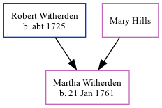

Martha Witherden 1761 -
[ Home ] | [ Calendar ] | [ Surnames Index ] | [ Family History ]The daughter of Robert Witherden and Mary Hills, Martha Witherden, the five times great-aunt of Nigel Horne, was born on Jan 21, 1761 and baptized in St Peters, Thanet, Kent, England on Feb 6, 1761.
Parents
- Robert was born c. 1725
Media
England Births & Baptisms 1538-1975 - R_941835105
Kent, Canterbury Archdeaconry baptisms 1538-1912 - GBPRS/CANT/B/96344874
Family Tree
Generated by Ged2Site. Last updated on Jul 20, 2025